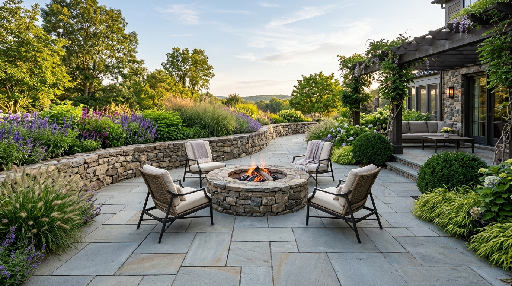

Selecting Natural Stone for Northeast Climates: Bluestone vs. Granite & Fieldstone
A technical comparison of stone porosity, thermal finishes, and sub-base physics when engineering outdoor living terraces that must survive thirty winters of freeze-thaw expansion.